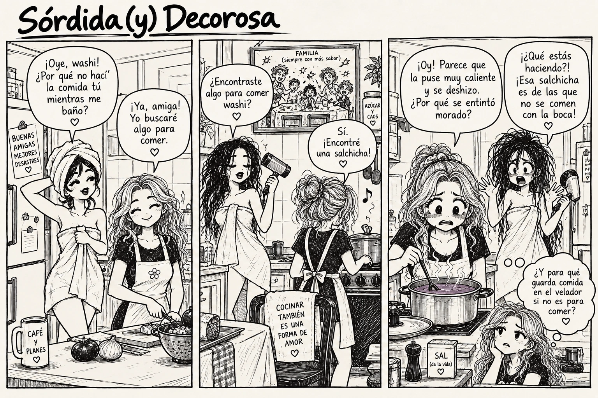

A.C. Elysia
La cecina
En el teléfono, desliza la tira hacia los lados para leer las viñetas. También puedes abrir la imagen completa y ampliarla.


Leer la transcripción
Viñeta 1 · En la cocina
—¡Oye, washi! ¿Por qué no hací’ la comida tú mientras me baño?
—¡Ya, amiga! Yo buscaré algo para comer.
Viñeta 2 · La salchicha
—¿Encontraste algo para comer washi?
—Sí. ¡Encontré una salchicha!
Viñeta 3 · La olla
—¡Oy! Parece que la puse muy caliente y se deslizó. ¿Por qué se entintó morado?
—¡¡Qué estás haciendo?! ¡Esa salchicha es de las que no se comen con la boca!
Pensamiento: ¿Y para qué guarda comida en el velador si no es para comer?